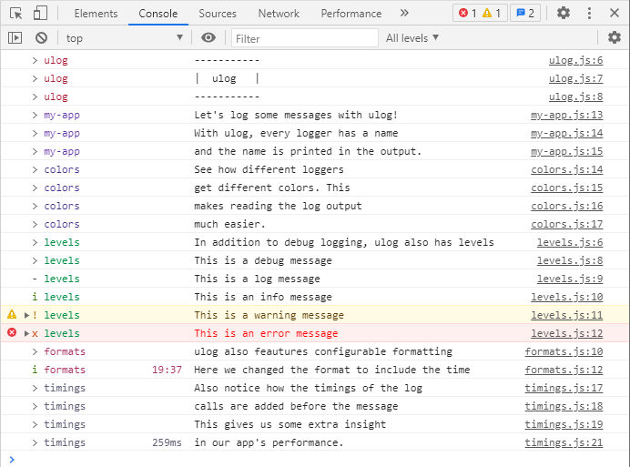

vs debug
This page compares ulog to debug.
Open devtools
Open the browser developer tools (F12).
Enable logging
No output will be visible until you enable logging. To enable
logging in both debug and ulog, set
debug=*.
You can do this using the developer tools GUI (tab Application in
Chrome), or in the Console tab run this command:
localStorage.setItem('debug', '*'),
or you can press the button below:
Log some messages
Press the buttons to log messages with both loggers:You should get output like this:
ulog monitors the config
You may notice that debug is not producing any output,
whereas ulog is. That's because ulog monitors
the configuration at runtime but debug doesn't. So to get
debug to pick up our configuration change, reload the
page (F5). Then, press both buttons again. This time, we can see
debug and ulog output side by side:
The output of ulog and debug is very similar.
Both loggers add the name of the logger to the message and both loggers
show some timing information. Also, both loggers use colors to produce
more clear output. But, there are actually more differences here than
initially meet the eye.
ulog preserves the callstack
One big difference between debug and ulog
is marked with arrows in the screenshot. ulog preserves
the callstack, meaning file names and line numbers shown in the
console point to the client code. This is in big contrast to
debug, which injects it's own formatting function in
the callstack, meaning all file names and line numbers point to that
function in the debug minified source file. Not very
convenient!
ulog has configurable formatting
debug only allows some tweaks to it's formatting.
ulog allows you to take full control of formatting.
You can change the format for all or some loggers using config
option log_format. For example, let's try adding the time to the
message. Set log_format=time lvl name perf in the
devtools or press the button below: